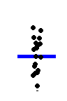
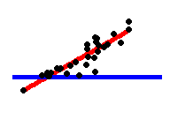

Common name
Built-in function R
Equivalent linear model in R
Exact?
The linear model in words
Icon
y is independent of x
P: One-sample t-test
N: Wilcoxon signed-rank
P: One-sample t-test
N: Wilcoxon signed-rank
t.test(y)
wilcox.test(y)
lm(y ~ 1)
lm(signed_rank(y) ~ 1)One number (intercept, i.e., the mean) predicts y.
- (Same, but it predicts the signed rank of y.)
P: Paired-sample t-test
N: Wilcoxon matched pairs
N: Wilcoxon matched pairs
t.test(y1, y2, paired=TRUE)
wilcox.test(y1, y2, paired=TRUE)lm(y2 - y1 ~ 1)
lm(signed_rank(y2 - y1) ~ 1)One intercept predicts the pairwise y 2 -y 1 differences.
- (Same, but it predicts the signed rank of y 2 -y 1 .)
- (Same, but it predicts the signed rank of y 2 -y 1 .)

y ~ continuous x
P: Pearson correlation
N: Spearman correlation
P: Pearson correlation
N: Spearman correlation
cor.test(x, y, method='Pearson')
cor.test(x, y, method=Spearman')
lm(y ~ 1 + x)
lm(rank(y) ~ 1 + rank(x))One intercept plus x multiplied by a number (slope) predicts y.
- (Same, but with ranked x and y)

y ~ discrete x
P: Two-sample t-test
P: Welch’s t-test
N: Mann-Whitney U
P: Two-sample t-test
P: Welch’s t-test
N: Mann-Whitney U
t.test(y1, y2, var.equal=TRUE)
t.test(y1, y2, var.equal=FALSE)
wilcox.test(y1, y2)
lm(y ~ 1 + G2)A
gls(y ~ 1 + G2, weights=...B)A
lm(signed_rank(y) ~ 1 + G2)AAn intercept for group 1 (plus a difference if group 2) predicts y.
- (Same, but with one variance per group instead of one common.)
- (Same, but it predicts the signed rank of y.)）

P: One-way ANOVA
N: Kruskal-Wallis
N: Kruskal-Wallis
aov(y ~ group)
kruskal.test(y ~ group)lm(y ~ 1 + G2 + G3 + .. + Gn)A
lm(rank(y) ~ 1 + G2 + G3 + .. + Gn)AAn intercept for group 1 (plus a difference if group ≠ 1) predicts y.
- (Same, but it predicts the rank of y.)
- (Same, but it predicts the rank of y.)
P: One-way ANCOVA
aov(y ~ group + x)lm(y ~ 1 + G2 + G3 + ... + Gn + x)A✓
- (Same, but plus a slope on x.)
Note: this is discrete AND continuous. ANCOVAs are ANOVAs with a continuous x.
Note: this is discrete AND continuous. ANCOVAs are ANOVAs with a continuous x.
P: Two-way ANOVA
aov(y ~ group * sex)lm(y ~ 1+G2+G3+...+Gn+
S2+S3+...+Sk+
G2*S2+G3*S3+...+Gn*Sk)✓
Interaction term: changing sex changes the y ~ group parameters.
Note: G2 ... Gn is an indicator (0 or 1) for each non-intercept levels of the group variable. Similarly for S2 ... Sk for sex. The first line (with Gi ) is main effect of group, the second (with Si ) for sex and the third is the group * sex interaction. For two levels (e.g. male/female), line 2 would just be S2 and line 3 would be S2 multiplied with each Gi.
Note: G2 ... Gn is an indicator (0 or 1) for each non-intercept levels of the group variable. Similarly for S2 ... Sk for sex. The first line (with Gi ) is main effect of group, the second (with Si ) for sex and the third is the group * sex interaction. For two levels (e.g. male/female), line 2 would just be S2 and line 3 would be S2 multiplied with each Gi.
[Coming]
Counts ~ discrete x
N: Chi-square test
N: Chi-square test
chisq.test(groupXsex_table)Equivalent log-linear model
glm(y ~ 1+G2+G3+...+Gn+
S2+S3+...+Sk+
G2*S2+G3*S3+...+Gn*Sk, family=...)A✓
Interaction term: (Same as Two-way ANOVA.)
Note: Run glm using the following arguments:
As linear-model, the Chi-square test is log(y_i) = log(N) + log(alpha_i) + log(beta_j) + log(alpha_i beta_j)，where alpha_i and beta_j are proportions. See more info in the accompanying notebook.
Note: Run glm using the following arguments:
glm(model, family=poisson())。As linear-model, the Chi-square test is log(y_i) = log(N) + log(alpha_i) + log(beta_j) + log(alpha_i beta_j)，where alpha_i and beta_j are proportions. See more info in the accompanying notebook.
Same as Two-way ANOVA
N: Goodness of fit
chisq.test(y)glm(y ~ 1 + G2 + G3 + ... + Gn, family=...)A✓
(Same as One-way ANOVA and see Chi-Square note.)
1W-ANOVA